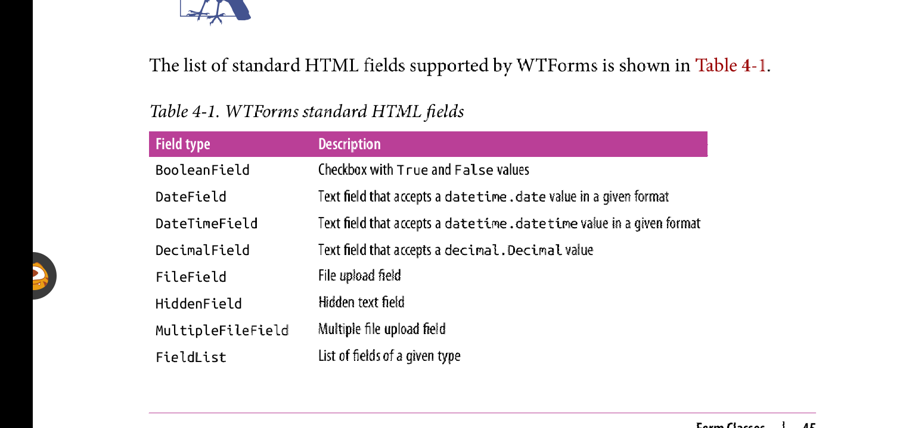

简介
html标签可以用来构建表格。request对象包含了用户通过浏览器发送的所有信息，特别是post请求，包含了表单数据。
flask-wtf扩展简化了表单的创建和验证提交的表单数据。
Configuration
flask_wtf不需要在application level进行配置，只需要配置secret key就可。secret key用于保护表单免受攻击者伪造。以下是配置代码:
app = Flask(__name__) app.config['SECRET_KEY'] = 'hard to guess string'
app.config类似于字典，用于存储配置变量。可以使用它从文件， environment,或者配置对象导入配置信息。
secret string必须保存在environment variable中，以提高安全性。
Web Forms
flask-wtf使用继承于FlaskForm类的子类表示表单，该子类包含一系列表示表单字段的字段类型对象变量，每一个字段对象可关联多个validator.validator用于检测由用户提交的数据是否合法。
# a simple web form that has a text field and a submit button.
from flask_wtf import FlaskForm
from wtforms import StringField, SubmitField
from wtforms.validators import DateRequired
class NameForm(FlaskForm):
name = StringField('What is your name?', validators=[DateRequired()])
submit = SubmitField('submit')
wtforms支持的一系列html fields

wtforms validators
HTML Rendering of Forms
表单字段在template中是可调用的，会渲染自身。假设view function传递form对象给占位变量form,以下是渲染表单的代码:
<form method="POST">
{{ form.hidden_tag() }} #flask定义的隐藏字段，用与跨站表单伪造保护。
{{ form.name.label }} {{ form.name() }} #这里是form.name()， 而不是form.name.这是字段可调用性的体现。
{{ form.submit() }}
</form>
在渲染表单字段的函数调用中添加的任何keyword arguments都被转换成html 标签的属性。如此，可以传参id,class属性，或定义style属性。
<form method="POST">
{{ form.hidden_tag() }}
{{ form.name.label }} {{ form.name(id="my-text-field") }}
{{ form.submit() }}
</form>
上述方式还是有点麻烦，flask_bootstrap提供了一种快速渲染flask_wtf 表单的方式。上诉表格可使用如下代码渲染:
{% import "bootstrap/wtf.html" as wtf %} #在这里用单引号包围bootstrap/wtf.html，这种形式无效，务必留心
{{ wtf.quick_form(form) }}
quick_form接受flask_wtf FlaskForm对象，使用bootstrap默认风格渲染。
以下是完整的index.html
# index.html
{% extends 'bootstrap/base.html' %}
{% import 'bootstrap/wtf.html' as wtf %}
{% block title %}Flasky {% endblock %}
{% block page_content %}
<div class="page-header">
<h1>Hello, {% if name %} {{ name }} {% else %} Stranger {% endif %}! </h1>
{{ wtf.quick_form(form) }} # 注意这里使用的是{{和}}，而不是{% %}
</div>
{% endblock %}
Form Handling in View Function
以下是处理表单的代码:
@app.route('/', methods=['POST', 'GET'])
def index():
name = None
form = NameForm()
if form.validate_on_submit(): #当表单被提交，并且表单数据通过所有validators时，返回True。该方法决定表单是被渲染还是被处理
name = form.name.data
form.name.data = ''
return render_template('index.html', form=form, name=name)
Redirection and User Sessions
上述版本存在一个问题，当你提交表单后再刷新页面，浏览器会提示你是否重新提交表单。
这是因为当刷新页面时，浏览器会重复最后一次request.当最后一次request是post时，会造成表单重复提交的结果，所以浏览器会提示你。
可以使用redirection解决这种问题。redirection是一种特殊的包含url的响应。当浏览器接受到一个redirection时，它会发送一个包含redirection中的url的GET请求，该url是最终显示的页面。
但是redirecition带来了一个新问题:无法访问被结束的请求中的数据。一旦request终止，表单数据也随之被销毁。因此需要将POST请求中的表单数据保存下来，以供redirection访问。
可以将请求中的数据保存在user sessions中，以在所有出现过的请求中共享。user session是一种特定于每一个连接的客户端的私有存储。可以通过request.session访问，user session类似于python 字典。
user session 默认存储在客户端的使用secret key 加密的cookie里，任何伪造cookie都会渲染错误签名，以致会话验证失败。
以下是实现了redirection 和 user session的新版本:
# hello.py
from flask import Flask, render_template, session, redirect, url_for
@app.route('/', methods=['GET', 'POST'])
def index():
form = NameForm()
if form.validate_on_submit():
session['name'] = form.name.data
form.name.data = ''
return redirect(url_for('index'))
return render_template('index.html', form=form, name=session.get('name')) #一旦key不存在，session.get会返回None
Message Flashing
当用户请求完成，这时很有必要给用户一个状态更新。这种更新可以是需要用户确认的消息，警告，或者一个错误。举个例子，比如用户登陆失败时，登陆页面的登陆表单下方会出现登陆失败的原因，比如用户名不存在，密码错误等。
可以使用flask的核心功能之一的flash()函数实现这种目的。
# hello.py flashed messages
from flask import Flask, render_template, session, redirect, url_for, flash
@app.route('/', methods=['POST', 'GET'])
def index():
form = NameForm()
if form.validate_on_submit():
old_name = session.get('name')
if old_name is not None and old_name != form.name.data:
flash('Looks like you have changed your name!')
session['name'] = form.name.data
return redirect(url_for('index'))
return render_template('index.html', form=form, name=session.get('name'))
最好在base.html模版中渲染flashed message,使得所有页面都渲染上flashed message.
可以使用get_flashed_messages()函数获得flashed messages.
{% block content %}
<div class="container">
{% for message in get_flashed_messages() %}
<div class="alert alert-warning">
<button type="button" class="close" data-dismiss="alert">×</button>
{{ message }}
</div>
{% endfor %}
</div>
{% endblock %}
上述之所以用loop，是因为可能获取一系列处于队列中的flashed messages.一旦flashed messages被获取，那么它们也就从队列中丢弃，因此下一次的get_flashed_messages()调用将不会获取到任何flashed messages.